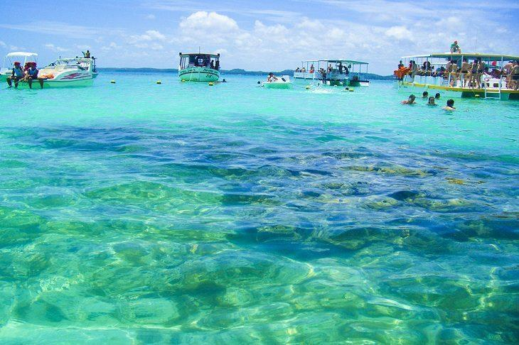

As águas do mar da praia de Ipioca adquirem tons azuis e esverdeados, que se juntam na perfeição com as areias claras e fofas. Além da praia ser dona de uma tranquilidade ímpar!
Com praias e mar paradisíacos, Maragogi tem praias que chamam a atenção, pois é uma combinação de águas mornas, mar calmo e oceano com tons azulados.

A Praia do Patacho, no litoral norte de Alagoas, é uma das mais bonitas do Nordeste. Com águas cristalinas e areias cercadas por coqueiros, esse paraíso fica na cidade de Porto de Pedras.